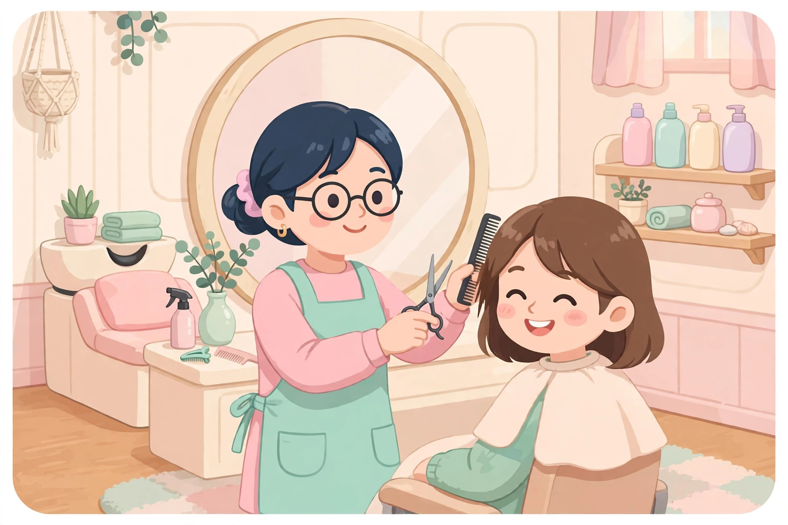

提示：如果頁面變成純文字、沒有圖片和播放按鈕，說明 Safari 閱讀器模式開了，點地址欄的書本圖標退出閱讀器，即可恢復彩色頁面。
去理髮店剪頭髮
안녕하세요.
去理髮店剪頭髮，學說「想剪頭髮」、問怎麼剪、洗頭和問價錢。

안녕하세요.
머리를 자르고 싶어요.
어떻게 자를까요?
조금만 짧게 해 주세요.
앞머리도 조금 잘라 주세요.
샴푸도 해 주세요.
네, 좋아요.
거울을 봐 주세요.
아주 좋아요.
얼마예요?
만 오천 원이에요.
여기 있어요.
감사합니다. 다음에 또 오세요.
還沒播放，點上面的大按鈕開始。
慢速女聲朗讀，先聽一遍，再一句一句跟讀。如果大按鈕點了還是沒聲音，請點直接打開音頻，或點下面的備用朗讀。
逐句翻譯
- 你好。
- 我想剪頭髮。
- 要怎麼剪呢？
- 請幫我剪短一點就好。
- 瀏海也請幫我剪短一點。
- 也請幫我洗頭。
- 好的，沒問題。
- 請看一下鏡子。
- 非常好。
- 多少錢？
- 一萬五千韓元。
- 給你。
- 謝謝。下次再來。
文法講解
1. -고 싶어요（想做……）
是什麼：表示「想做某件事」的願望，是初級最常用的說法之一。句型結構：動詞詞幹 + -고 싶어요。短文例句：머리를 자르고 싶어요.（我想剪頭髮。）再舉一例：커피를 마시고 싶어요.（我想喝咖啡。）容易錯的地方：-고 싶어요 前面要接動詞詞幹，不能直接接名詞；說「머리 싶어요」是錯的，要說「머리를 자르고 싶어요」。
2. -(으)ㄹ까요?（要……嗎？徵求對方意見）
是什麼：向對方提問、徵求意見或提議時用的問法，語氣很客氣。句型結構：動詞詞幹 + -(으)ㄹ까요?（詞幹以母音結尾用 -ㄹ까요，以子音結尾用 -을까요）。短文例句：어떻게 자를까요?（要怎麼剪呢？）再舉一例：뭘 먹을까요?（要吃什麼呢？）容易錯的地方：詞幹以 ㄹ 結尾時，ㄹ 和 -ㄹ까요 合併成一個 ㄹ，자르다 變成 자를까요，不是 자르을까요。
3. -게（把形容詞變成副詞，「……地」）
是什麼：形容詞詞幹 + -게，變成副詞，用來修飾動詞，意思是「……地」。句型結構：形容詞詞幹 + -게 + 動詞。短文例句：조금만 짧게 해 주세요.（請幫我剪短一點就好。）再舉一例：크게 말해 주세요.（請大聲說。）容易錯的地方：-게 後面要接動詞，不能接名詞；「짧게 머리」是錯的，要說「짧게 자르다」或「짧게 해 주세요」。
常用詞彙
- 머리 頭髮（meo-ri）—— 머리를 자르고 싶어요.（我想剪頭髮。）
- 자르다 剪、切（ja-reu-da）—— 어떻게 자를까요?（要怎麼剪呢？）另一個例句：종이를 자르다.（剪紙。）
- 조금 一點、少許（jo-geum）—— 조금만 짧게 해 주세요.（請幫我剪短一點就好。）另一個例句：조금 기다려 주세요.（請稍等一下。）
- 짧다 短的（jjal-da）—— 짧게 해 주세요.（請剪短一點。）另一個例句：머리가 짧아요.（頭髮很短。）
- 앞머리 瀏海、前額的頭髮（am-meo-ri）—— 앞머리도 조금 잘라 주세요.（瀏海也請幫我剪短一點。）
- 샴푸 洗髮精；洗頭（syam-pu）—— 샴푸도 해 주세요.（也請幫我洗頭。）另一個例句：샴푸를 사요.（買洗髮精。）
- 거울 鏡子（geo-ul）—— 거울을 봐 주세요.（請看一下鏡子。）另一個例句：거울을 봐요.（看鏡子。）
- 만 오천 원 一萬五千韓元（man o-cheon won）—— 만 오천 원이에요.（一萬五千韓元。）
跟讀小提示
短句很短，一句一句慢慢讀就好；「조금만 짧게 해 주세요」可以分成「조금만／짧게／해 주세요」三段來讀；問句「어떻게 자를까요?」「얼마예요?」句尾要輕輕揚起來；「주세요」讀得輕一點、柔和一點，聽起來更禮貌。
留給你的問題
머리가 길어요? 짧아요?
（你的頭髮長嗎？還是短？）